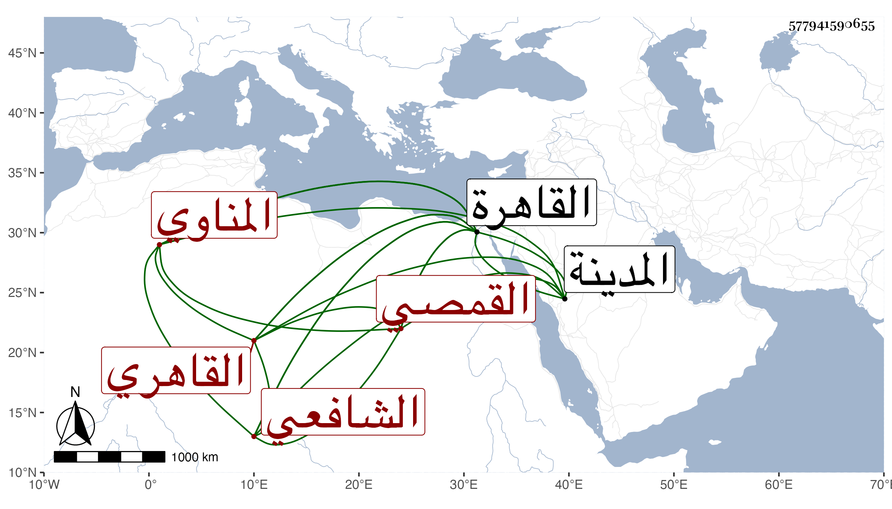

0902Sakhawi.DawLamic.ITO20230111-ara1.EIS1600.577941590655
Biography ID: 577941590655
1046
محمد بن أحمد بن عبد الرحمن بن أحمد الشمس القمصي الأصل القاهري ثم المناوي الشافعي أخو الجلال عبد الرحمن الماضي وأبوهما . ولد كما قرأته بخط أبيه في ليلة الخامس والعشرين من جمادى الثانية سنة اثنتين وثمانمائة بالقاهرة ونشأ فحفظ القرآن والعمدة والمنهاج وعرض على جماعة وسمع على الشريف بن الكويك من قوله فضل المدينة إلى آخر الترمذي ومن لفظه المسلسل بقراءة شيخنا الختم من مسلم والمقدمة منه مع بعض الإيمان وعلى الجمال الحنبلي بعض المسند وكذا سمع على الشهاب البطائحي والجمال الكازروني والسراج قاري الهداية والشمس البرماوي وأجاز له الشمس الشامي وعلى البرماوي والبرهان البيجوري والشمس الشطنوفي وغيرهم ، واشتغل بالفقه وغيره ، وناب في القضاء بمنية ابن سلسيل عن قضاتها وقطنها وتزوج بها وحج مرتين وجاور . ولقيته بالقاهرة وكان يقدمها أحيانا فأجاز لي بل سمع منه بأخرة بعض الطلبة ، وكان خيرا صالحا . مات بعد الثمانين تقريبا ودفن في ضريح جده بمنية القمص .
